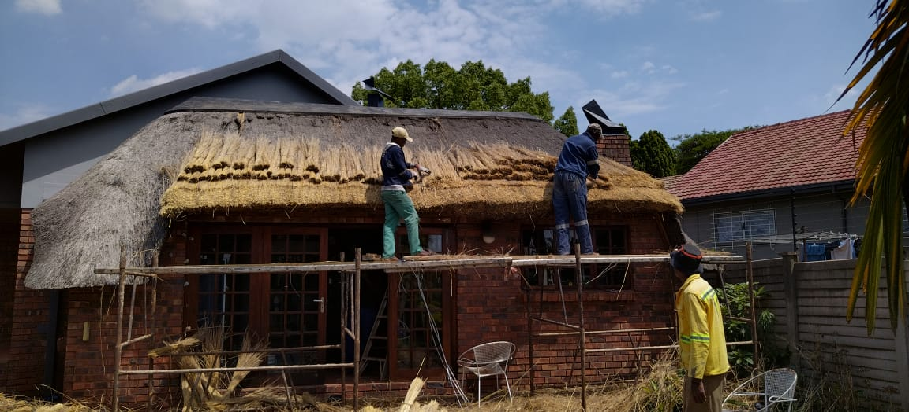

Renovations
Do you have chipped floors, faulty bathroom fixtures, very old lighting fixtures, cracked paint, termite infestations, warping and eaten up flower beds, torn screen from crazy cat, roof and gutter issues, ... You are at the right place. We do:
Roof Renovations

It is unfortunate that no roof lasts forever, but, fortunately, we are there to renovate it for you!
Signs You May Need Your Roof Renovated
-
Damaged Shingles
Probably the most notable red flag for roof inspection is when you see damaged or missing shingles on your roof.
-
Gutter Health
Did you you know your gutter systems can say a whole lot about about your roof? While it is normal to find leaves and other occassional debris in your gutter, it is not OK to notice granules.
-
Saging Roof
A roof should be strong and rigid to protect your home and family. Every component needs to be in place and none of them dhould be heavily damaged or missing.
-
Leaks
It usually occurs when shingles fall off and allow water to flow through the cracks. Just beacause you haven't seen a leak doesn't mean there isn't one.
When you notice any of these red flags, do not hesitate to call us. "When it comes to roofs, it is always better to fix things sooner than later!"
Floor Renovations & Tiling

Your floor is one of the most important elements in your interior, so it has to be perfect. Considering resurfacing? Renovating your interior? We get it - there are endless options for the tiles, and making a choice can be difficult.
Tiling a room or resurfacing it is a significant investment; and you may be stuck with your tile selection for a long time. This is not a decision that should be taken lightly, let alone hiring a professional to do the tiling for you. We've got you. We help you from tile selection to the actual tiling.
Painting
Painting is one of the fastest ways t transform your home from mundane to inspiring. Doing it on a regular basis not only enhances the visual appeal of your home, but also helps increase it's property value. Since it is a time-consuming and sometimes a tricky affair, it should be done appropriately and with proper care.
An efficient painting not only protects the walls, but X2 the beauty of homes. That is why you should consider hiring us. We guarantee a safe and cost effective painting.
Bathroom Renovations
There is a lot more to the bathroom than we would think. We transform it into much more than just another room in your house into a safe haven. A renovated bathroom gives a sense of security and satisfaction that in return provides peace of mind.
Kitchen Renovations
Kitchens tend to be where we spend a lot of our time in the house. It is also where we prepare food for aourselves and our families. So it makes sense to renovate the kitchen when you have the opportunity.
Basement Renovations
We transform the unfinished space below your home into beautiful, functional living area that you can use for storage, recreation or even sa a rental.
Landscape Renovations & Instant Lawns
Gardens are living organisms, and like all living things, they age. Just as human beings dress and groom themselves to look good, gardens too need to be designed and groomed to look their best. We help you maintain and improve the thrilling look of your garden.
Post-Renovation Cleaning
We help you clean your home immediately after renovation works have been carried out. We take care of all potential issues, problems and disruptions before you turn into your property. You may be ready to move in, but there can still be a few things left to take care of before you call it good.
Renovation Advisory

Do not want to hire a professional to do the renovation for you? Want to do that renovation yourself but do not know whre to start? We've got you - we look at the options and the styles you want and advise you on their practicality, suggesting improvements. We also help you establish a budget.
Not sure which design might be the best for your space? We help you decide better by drawing up a plan for the renovation.